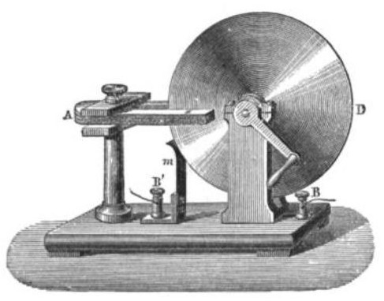

Faraday inventó el primer motor eléctrico, el primer transformador, el primer generador eléctrico y la primera dinamo, Sus principales descubrimientos incluyen la inducción electromagnética, el diamagnetismo y la electrólisis.En el campo de la química, Faraday descubrió el benceno, investigó el clatrato de cloro, inventó un antecesor del mechero de Bunsen, el sistema de números de oxidación e introdujo términos como ánodo, cátodo, electrodo e ion. Finalmente, fue el primero en recibir el título de Fullería Professor of Chemistry
